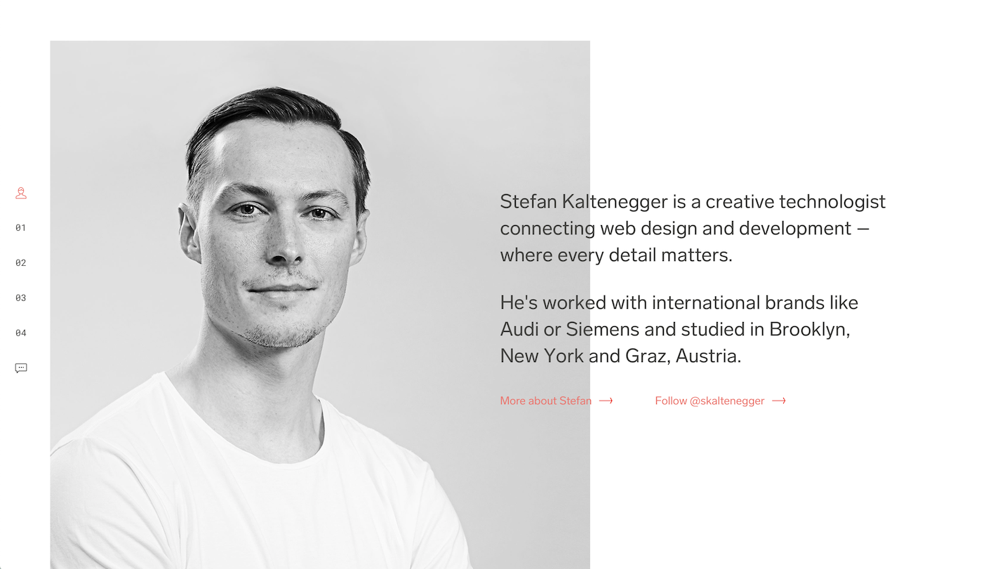
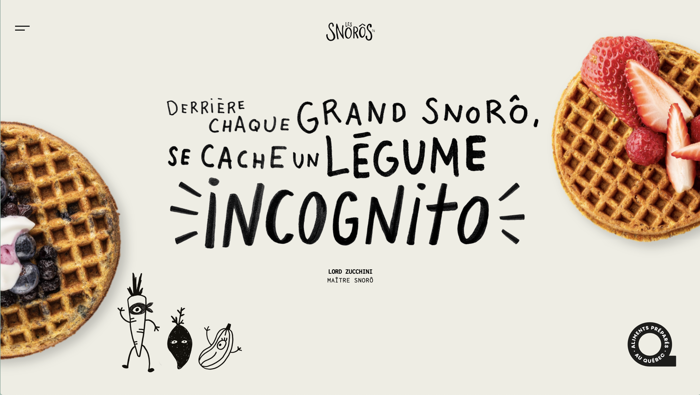
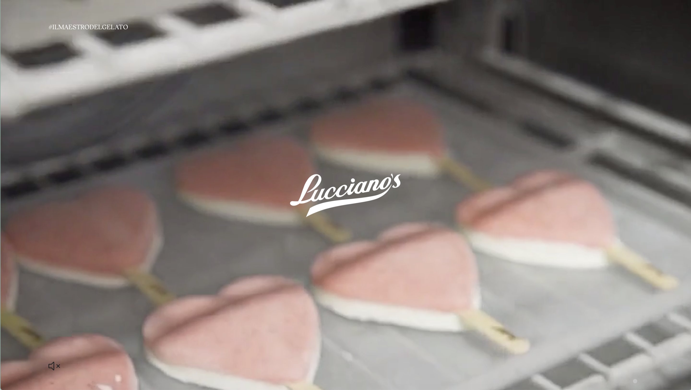
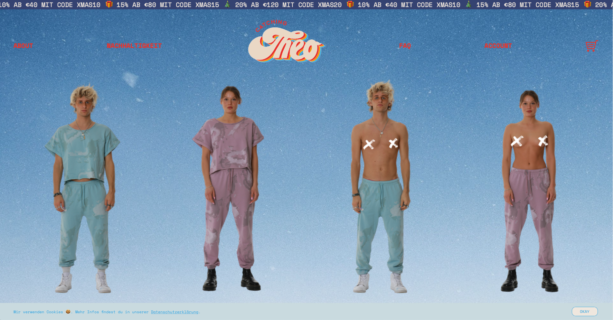
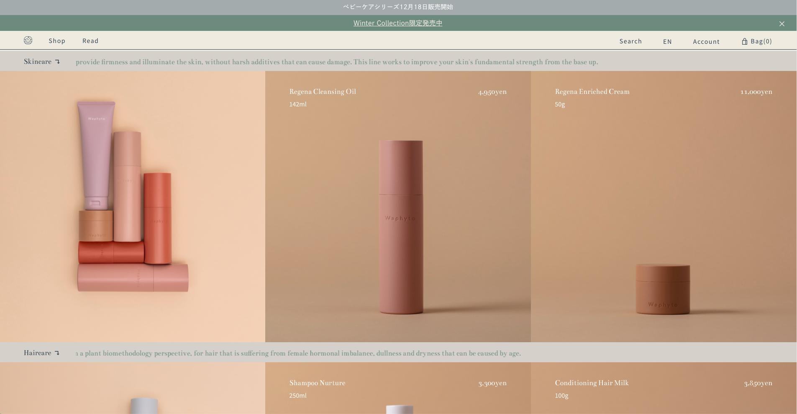
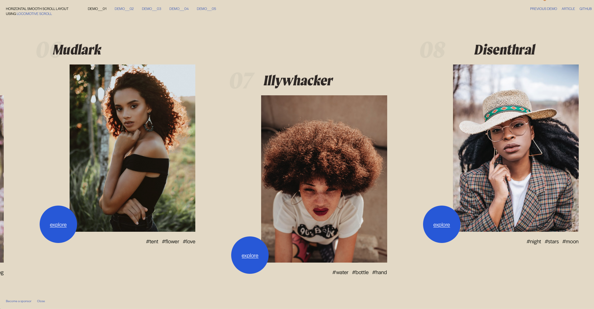
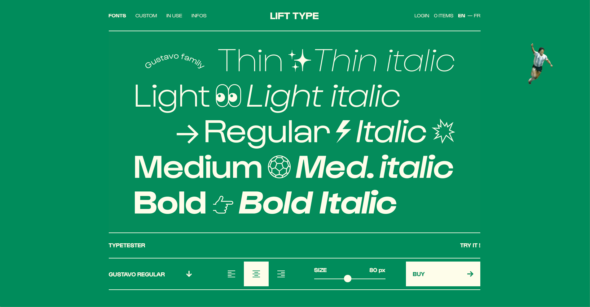

Week One
Prompt: What do you hope to achieve in this class by the end of the term? Are there special projects or technologies you’d like to see covered by the end of the term? Is there a site (or two) that gives you butterflies in your stomach? What is it?
Response: I've been planning to get more into web and ui/ux design, so I hope to learn as much as I can about the langauges and softwares we're going to use. I've always been afraid of coding/programming and I want to face my fears and even learn to enjoy it. I also hope to create at least one project that will enhance my portfolio. Animation is another topic I really like and I hope to learn how to use animations on websites.
A website I've always liked is Tablet Magazine's Website, done by Pentagram. It's clean but still evokes B&W newspapers, which I love!
Inspiring site of the week: 

Love how this website looks like a sketchbook page.
Week Two
Prompt: What are you planning to do for project 1? What content do you plan to show? How will you make each page unique while maintaining a cohesive design across the project? How will your color palette, imagery, and typography choice complement your subject matter?
Response: I am planning a food diary website, that has pictures and illustrations of food I ate last week. I plan to have a framework that keeps the pages consistent, while I move the images around and add doodles to make the pages different. My color platte will be either B&W or a color assigned to each dish. My imagery will be very hands-on (shot on iphone) and edited to look like a collage. These will all complement the diary/sketchbook concept.
Inspiring site of the week: 
So clean and minimal, but effective with the animations!
Week Three
Prompt: This weeks journal prompt, I want you to clearly imagine one user who'll love to use your Project 1 website. This user could be you, it could be someone similar to you, it could be someone completely opposite from you, it could even be a non-human animal or an alien or an amoeba. You get to choose. Really imagine what they are like in their mind. What do they spend their time on? what are their hobbies, clothes, music, favorite foods, books, tv. what's their personality like. Once you've imagined this person. write about them. just a paragraph, three to five sentences. try to have fun with it.
Response: A 20-something foodie stumbles upon my website when researching cold noodle recipes. She likes cute things, draws as a hobby and isn't great at cooking but she tries her best. Her cutting skills and plating leave something to be desired but she is intrigued by the simple recipes.
Inspiring site of the week: 
Simple but super fresh. Love the type pairings and little animated touches.
Week Four
Prompt: Read this short article https://hbr.org/2019/08/learning-is-supposed-t o-feel-uncomfortable and this one on resistance https://www.mindful.org/the-neuroscience-of-resistance-and-how-to-overcome-it/. Considering these articles, make a list of 5 things to keep you going when you feel resistance or discomfort.
Response:
1. Give myself enough time to get things done
2. Create a schedule and accountability
3. Give myself time to relax free of guilt instead of pushing for weeks then burning out
4. Keep my space clean and organized
5. Don’t over extend myself
Inspiring site of the week: 
The paralaxxing is super neat and I like how the different ice creams are in a image gallery.
Week Five
Prompt: N/A
Response:
Week Six
Prompt: Why did you choose the business/cause that you chose? Why do you think your redesign will be better? What area/content will you focus on in your redesign? Look at two other similar websites. What stands out about those sites? What bothers you about them? How will you improve things in your own design?
Response:I chose Boxer ramen because I love their established branding. Their website is also very bare-bones and not very stylized, I felt like I could expand on that. I’m focusing on creating more visual interest. I kept the same-ish layout as the original but added stronger visual interest. The website is changed for COVID but here’s the old one.
I looked at the websites for Afuri Ramen and Marukin Ramen, other popular ramen restaurants in Portland. I find these websites very bare-bones and simple. Not a bad thing but I find Boxer stands out with it’s hand-done, colorful aesthetic in comparison. Especially since both Afuri and Marukin are actual Japanese chains, I think the US website is so boring compared to what Japanese websites typically look like: more cute and expressive.
Inspiring site of the week: 
Super cool layout for a online shop. Love the models and clothes being presented like a character selection screen.
Week Seven
Prompt: N/A
Response:
Week Eight
Prompt: Read this article on mobile-first design and share your thoughts on mobile-first vs desktop first.
Response: I personally think mobile-first/Progressive Advancement makes so much more sense from a design perspective. The flip-side, Graceful Degradation, is something designers hate to do: have to give up cool features that they spent a lot of time on to cater to mobile. I think starting small then expanding keeps a designer happy, as they can focus on the mobile version then expand on the project later for the desktop. Theres less cutting of content this way.
Inspiring site of the week: 
I love how gridded this layout is. It's very elegant yet functional. The layout really suits the brand aesthetic.
Week Nine
Prompt: This one's about "why." Read this article (try to pretend it's not a cheezy article about business success). Spend some time thinking about why you are pursuing a career in design. Really dig down, do the 7 "whys" tool in the article. OR If that's too challenging right now, consider people in your life or people who've inspired you. Think about what drives them, what their "why" is. Why did they work so hard to do XYZ, was it from past experiences they had, was it because they saw a need they were called to fill? What's their deeper "why?" Ask them if you know them, or look up some biographical information and try to figure it out. Write about either you or your inspiration.
Response: I chose design as a career field because I wanted to make money doing art. I started out doing fine arts/painting and transitioned to design in college.
I find design very personally fulfilling as I can create work that people can consume, buy, use, wear, etc. I enjoy problem solving and ideation, finding the best solution graphically and functionally to a problem. I think at my core, I like to be needed and serve others. I find design is an artistic service that allows me to act out that inner desire.
My mom is a designer too and she’s the one who influenced me to choose this path. She considers her job as a means to a paycheck but also enjoys doing something she excels in. She always told me “I don’t love working but I enjoy it and am good at it”. I completely agree with that sentiment. I think art is my strongest skill, I enjoy it and if I can make money from it, why the hell not.
Inspiring site of the week: 
I'm not super into this site's colors or type choices, but I really enjoy the parallaxed scrolling. It's very visually satisfying.The overall layout is very clean and easy to navigate too.
Week Ten
Prompt: Fill out self evals for Project 1 and Project 2.
Response:
Inspiring site of the week: 
I always like how typefoundries present their type now that everything is much more digital. Instead of a printed type specimen, they tend to make fun web pages like this one. Obsessed with the gif in the corner and the simple one column layout.